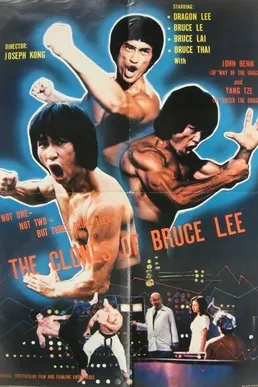

The genetics
Cloning provides the premise but is treated as a pretext for the fights. The film never explains how the clones are made beyond taking brain tissue from Lee's body, and they appear as fully grown adult fighters soon afterwards, played by different Bruce Lee imitators. The scientist Professor Lucas works for a state security agency, and when he feels insufficiently rewarded he turns his creations against one another, a cheap version of the mad scientist who sees his clones as his property. The film belongs to the "Bruceploitation" cycle that cashed in on Lee's death. In reality, cloning by nuclear transfer yields an embryo that must develop like any other, so a clone would be a much younger genetic twin rather than a ready-made copy; no primate had been cloned from adult cells, let alone a human.
How genetics is portrayed
- Overall portrayal of genetics
- mixed The state-backed cloning programme produces heroic crime-fighters, while the scientist who made them becomes a resentful villain who is defeated and arrested; the film ends with the clones victorious rather than on an ominous note, and treats the science as a pretext for fights.
- Outcome of the genetic intervention
- mixed The clones succeed in their crime-fighting missions, defeating a smuggler and Dr. Ngai, but their creator then turns them against each other and one clone is killed.
- Professor Lucas
- villain Aim: military, revenge (negative). He clones Bruce Lee from brain tissue for the security agency SBI, but when he feels unrewarded he pits the clones against one another and sends henchmen to kill them, a petty revenge the film condemns. He is defeated and arrested.
- Colonel Colin / Special Branch of Investigations (SBI)
- hero Aim: military, benevolent (positive). The colonel orders the cloning to create crime-fighting agents, and the clones carry out SBI missions against a gold smuggler and a would-be world conqueror. The agency is the side the film asks the viewer to support.
The story
On 20 July 1973, right after Bruce Lee's death in Hong Kong, Colonel Colin of the Special Branch of Investigations asks the scientist Professor Lucas to take samples of the star's brain tissue. From them Lucas creates three clones of Lee, who are trained in martial arts and sent to fight crime in Southeast Asia. Bruce Lee #1 goes undercover as an actor for a corrupt, gold-smuggling film producer who plans to have him killed on camera. The other two travel to Thailand to stop Dr. Ngai, a mad scientist who injects men with a formula that turns their skin to bronze and plans to conquer the world with them. After the clones return, Lucas, resentful that he was not properly rewarded, turns them against each other and then sends his henchmen after them. One clone is killed, but the others defeat Lucas's men and the professor is arrested.